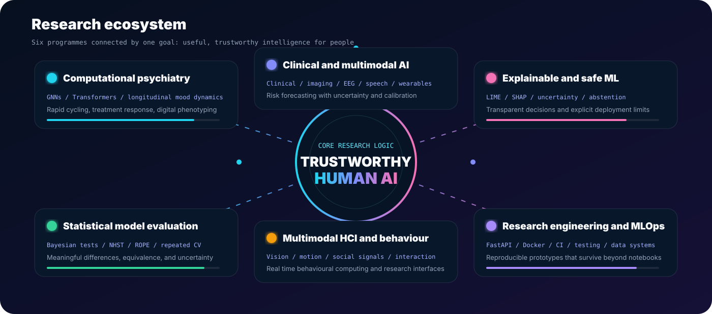
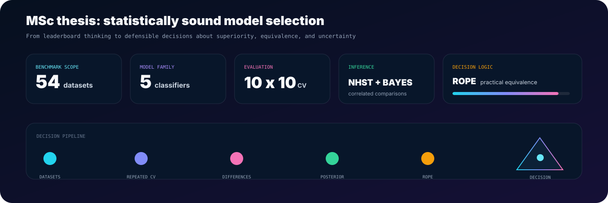
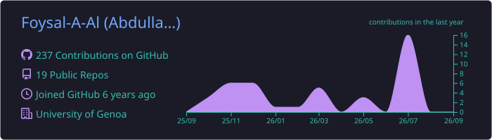
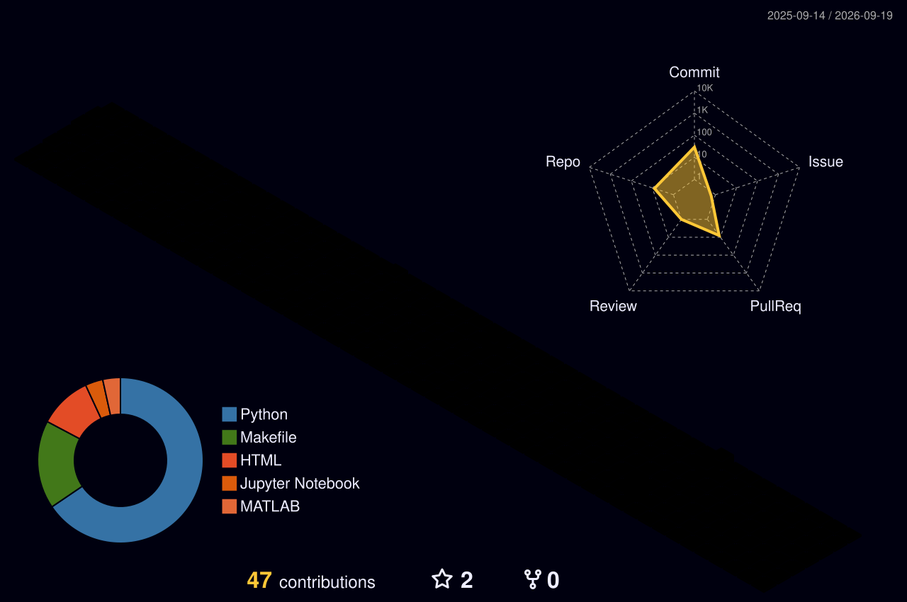
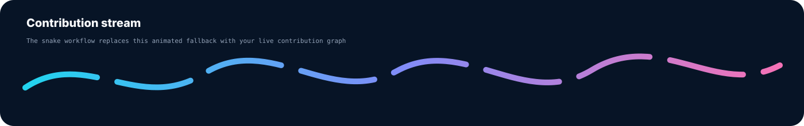

Abdullah Al Foysal
AI / ML ResearcherUniversity of Genoa
Casa Paganini InfoMus Lab
Research profile
I build machine learning systems for questions where prediction alone is not enough. My work combines computational psychiatry, clinical and multimodal AI, psychology, human behaviour, explainable machine learning, Bayesian evaluation, and research engineering.
scientific question → data design → modelling → statistical evaluation → explanation → uncertainty → usable research software
Research ecosystem

What I work on
Computational psychiatry
Bipolar disorder, rapid cycling, treatment response, temporal modelling, symptom graphs, and digital phenotyping.
Clinical and multimodal AI
Clinical, pharmacological, speech, imaging, EEG, wearable, and behavioural variables for risk forecasting.
Explainable and safe ML
LIME, SHAP, calibration, uncertainty, abstention, fairness, subgroup evaluation, and documentation.
Statistical evaluation
Bayesian correlated tests, NHST, ROPE, repeated validation, equivalence, and uncertainty.
Multimodal HCI
Vision, movement, social signals, real time behavioural computing, and interactive systems.
Research engineering
FastAPI, Streamlit, PyQt6, Docker, GitHub Actions, tests, databases, and reproducible pipelines.
Flagship project laboratory

Selected public systems
PsychoGraph-Net
Graph augmented Transformer for psychiatric prediction using symptom topology and longitudinal dynamics.
GCN / TRANSFORMER / NEO4J / LIMENeuroFusion
Uncertainty aware multimodal mental health platform with calibrated probabilities, API, dashboard, and tests.
CALIBRATION / FASTAPI / STREAMLIT / DOCKEROptical Flow Cluster Analyzer
Real time movement quality analysis with detection, flow, clustering, clusterability, validation, and export.
YOLOV8 / OPTICAL FLOW / PYQT6PyEyesWeb
Python toolkit for quantitative expressive movement analysis across research, health, arts, and HCI.
PACKAGE / FEATURES / DOCS / INTEGRATIONPsychological Analytics and Blockchain
Predictive psychological analytics with a lightweight auditable data integrity layer.
RANDOM FOREST / HASH LINKED RECORDSStudent Stress Analysis
Multi factor study of psychological, physiological, academic, social, and environmental stress.
EDA / FEATURE IMPORTANCE / VISUALISATIONMSc thesis

Statistically Sound Model Selection
Broad benchmark scope
Comparable model family
Repeated evaluation
Frequentist comparison
Posterior decisions
Practical equivalence
Experience and education
Multimodal HCI, expressive and social behaviour, behavioural analytics, research interfaces, and reproducible software.
University of Genoa. Machine learning, deep learning, advanced data systems, and statistical model evaluation.
Jiangxi University of Science and Technology. Computing, programming, information systems, and engineering.
Inspection, compliance, risk identification, quality monitoring, and technical reporting.
Technical stack
Live GitHub intelligence

3D contribution landscape

Contribution stream
